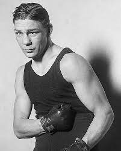
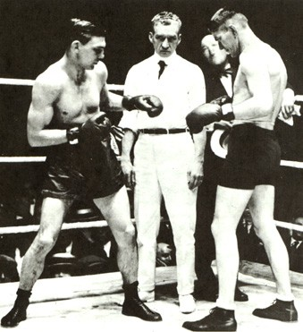
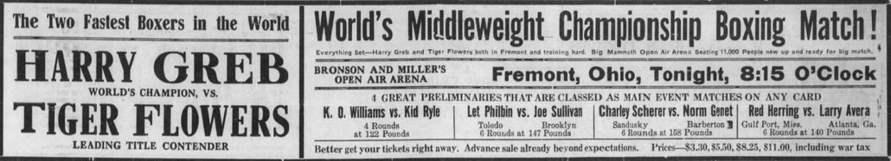
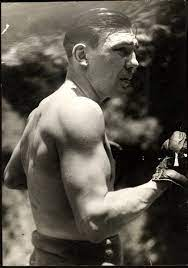

Boxing Debut: The Pittsburgh Windmill
Harry Greb, born in 1894 in Pittsburgh, Pennsylvania, began his professional boxing career in 1913. Known for his
relentless style, unmatched stamina, and fearless approach, Greb quickly rose through the ranks to become one of
the most feared and respected fighters of his time. His debut marked the start of an extraordinary career that
would leave an indelible mark on boxing history.

Best Fights: Legendary Battles
1923 - Harry Greb vs. Gene Tunney
One of Greb's most iconic victories came in 1923 when he defeated the future heavyweight champion Gene Tunney. In
their first meeting, Greb's nonstop aggression and incredible work rate overwhelmed Tunney, earning him a
unanimous decision and solidifying his reputation as a true warrior in the ring.

1926 - Harry Greb vs. Tiger Flowers
Greb faced Tiger Flowers in a series of grueling bouts, showcasing his toughness and determination. Though their
matches were fiercely contested, they remain a testament to Greb's skill and the respect he commanded in the
boxing world.


Achievements: The Iron Man of Boxing
Harry Greb is celebrated as one of the greatest middleweights of all time. Known for his aggressive style and
incredible durability, he compiled an astonishing record of over 300 fights during his career. Greb's ability to
adapt and dominate in the ring earned him a place among the sport's legends.
- World Middleweight Champion (1923-1926)
- Fought an estimated 298-303 bouts with only a handful of losses
- Defeated 18 Hall of Fame fighters
- Known for fighting with impaired vision in his later years
Struggles: Triumph Over Adversity
Despite his successes, Greb's career was not without challenges. He fought much of his later career with severely
impaired vision in one eye, a fact he kept hidden from officials and opponents alike. Tragically, his life was cut
short in 1926 at the age of 32 following complications from surgery. Greb's resilience and determination continue
to inspire generations of boxers.
